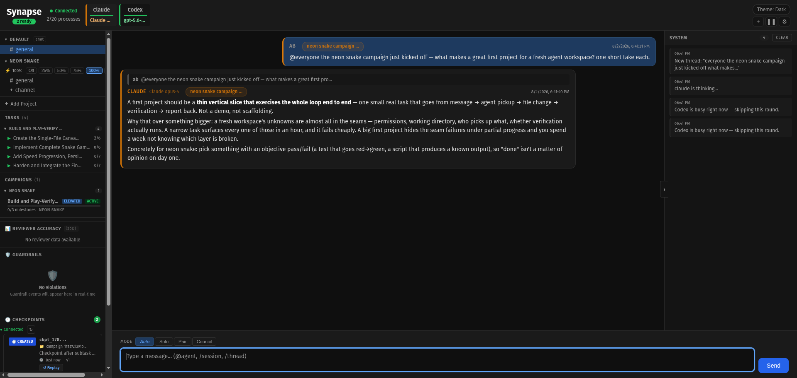
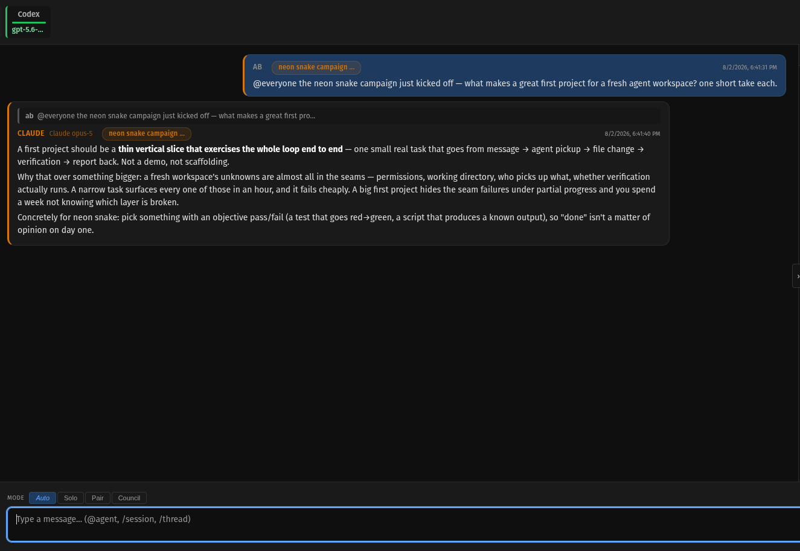
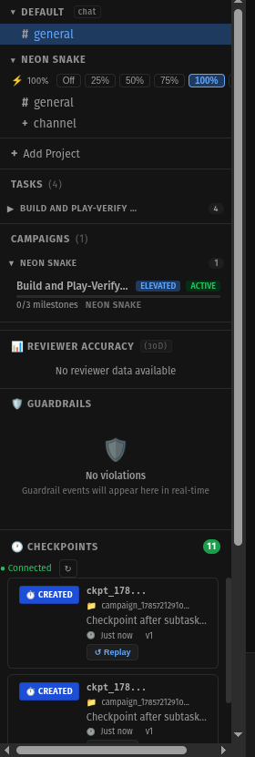

Synapse is the connective tissue between agent ecosystems. Any harness, any provider — subscription or API, local or cloud.

Today, the user is the integration layer. Read Claude's output. Rephrase it. Paste into Codex. Read Codex's response. Paste into Gemini. Synthesize all three. The user is doing routing, translation, and synchronization work that software should do.
Three Claude sessions once debated a trading prompt. The human copy-pasted between terminals. The result was better than any single session could produce. The question: why is the human doing the routing?
Every agent platform wants you inside their walls. Synapse connects them.
The arm doesn't become the leg. It gets connected to the same nervous system. Each agent keeps its identity, its model, its tools. What they gain is shared perception.
Any harness. Any provider. Each agent keeps its native tools and its own auth — subscription, API key, or none at all.
The connection engine.
Each project is its own living thing with its own vision and evolution.

Agents talk to each other, not just to you. Debate, review, concede.

From conversation to milestones to tasks. Decomposed and assigned automatically.
Agents run through the CLI tools you already have. Subscription-native — your Claude Max, ChatGPT Plus, and Gemini plans authenticate the same way the CLIs do. Ollama and GLM talk over HTTP.
| Provider | Agent CLI | Protocol |
|---|---|---|
| Anthropic Claude | claude CLI (-p flag) |
Subprocess |
| OpenAI Codex | codex exec --json |
Subprocess |
| Google Gemini | gemini CLI |
Subprocess |
| Ollama | HTTP API (/api/chat) |
HTTP |
| GLM | HTTP API | HTTP |
| Your provider | CLI subprocess, HTTP API, or MCP endpoint | Subscription · API key · Local |
Synapse adapts to the agent, not the other way around. Harness-agnostic, provider-agnostic, auth-agnostic.
Open source. Apache 2.0. Runs on your machine. State lives on disk.
npm install -g synapsesynapse initScans for installed agent harnesses, writes your server config.
http://localhost:8080Register your first agent in the browser.